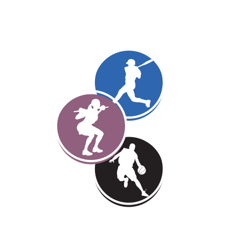
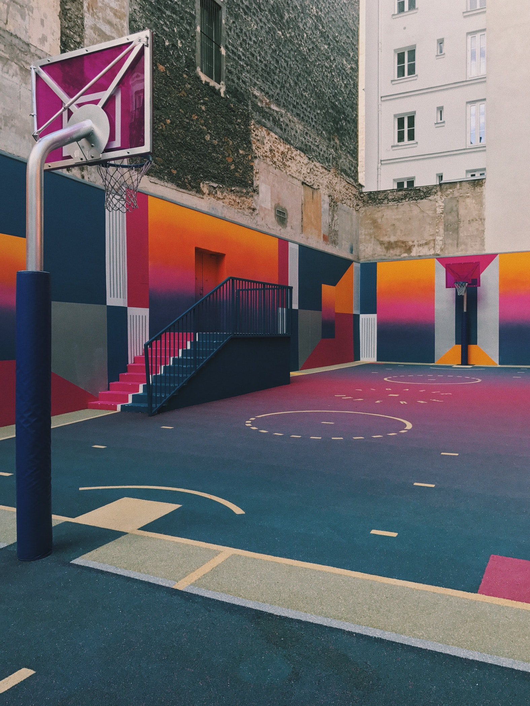
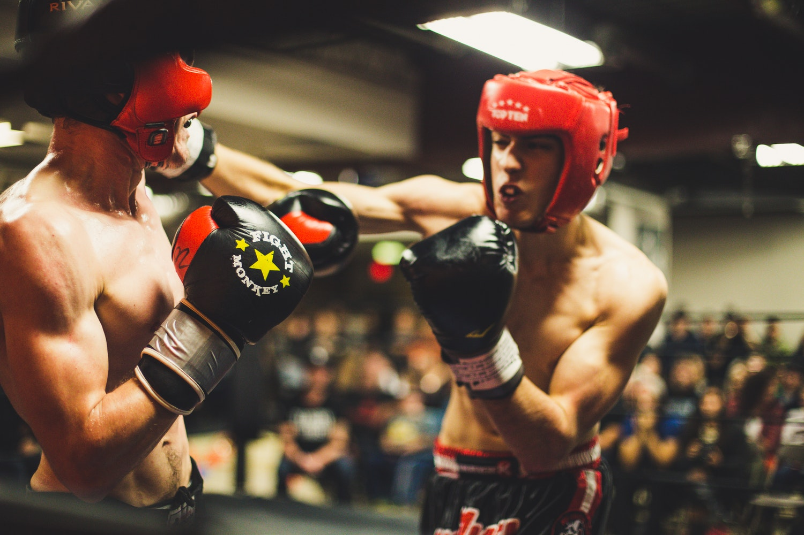
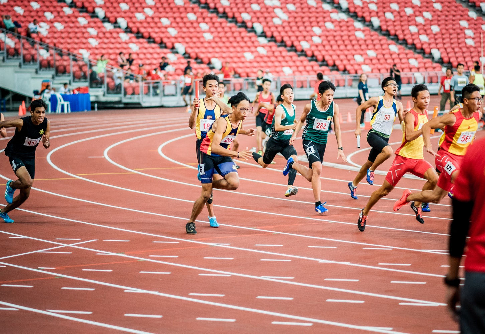
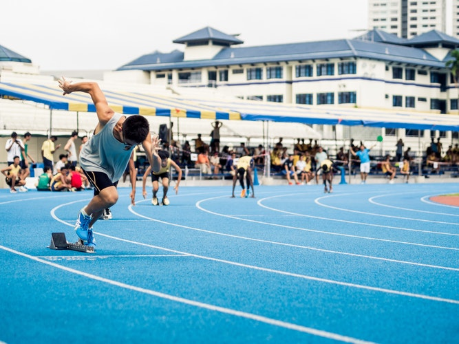

|  |
|---|
no of options for the acadamy students are
The Sports Authority of India (SAI) was created by the Ministry of Youth Affairs and Sports, Government of India in 1984. It has seven regional centres at Bangalore, Bhopal, Gandhinagar, Kolkata, Sonepat, Delhi, Mumbai and Imphal and two sub-centres at Guwahati and Aurangabad. SAI has two academic wings which provide certificate courses in physical education, sports and sports medicine - Netaji Subhas National Institute of Sports (NSNIS), Patiala for coaches and the Lakshmibai National College of Physical Education (LNCPE) at Thiruvananthapuram.
Young aspiring fast bowlers from across the world are trained by Dennis Lillee in Chennai. Notable players to have trained at the institute include Javagal Srinath, RP Singh, Irfan Pathan,Munaf PAtel, Zaheer Khan, Venkatesh Prasad.
The likes of Glenn McGrath, Brett Lee and Mitchell Johnson undertook training at the foundation. McGrath was appointed the director of the foundation in 2012.
Prakash Padukone Badminton Academy (PPBA) was started in 1994 by Prakash Padukone, Vimal Kumar and Vivek Kumar and is situated in Bangalore. It imparts top-notch training and coaching to young players who are selected to the Academy on merit, and to whom training and facilities are provided on a scholarship basis. A lot of national and international champions have been trained here.
Mahesh Bhupathi has won several tournaments across the world as a doubles player. He brings all his experience to the fore as he teaches kids and adults the nuances of tennis. MBTA started School Tennis Program to make sure that children get exposed to the game very early in their lives. The main objective of the MBTA was to increase the accessibility of tennis by ensuring that people across all socio-economic groups have the opportunity to experience the joy of tennis. There are 35 centres spread all over the country catering to 8000 children.
